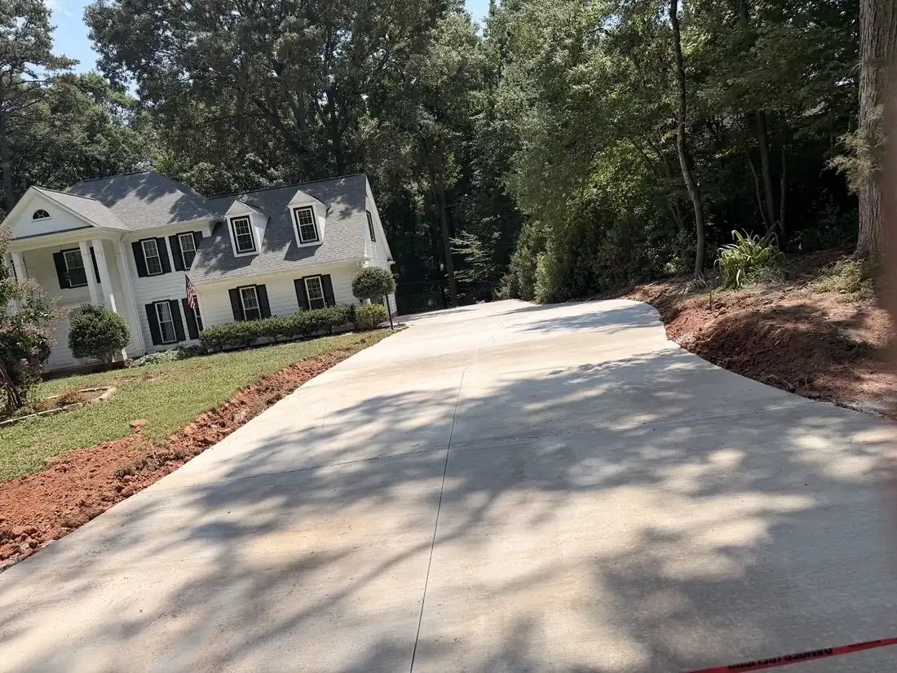
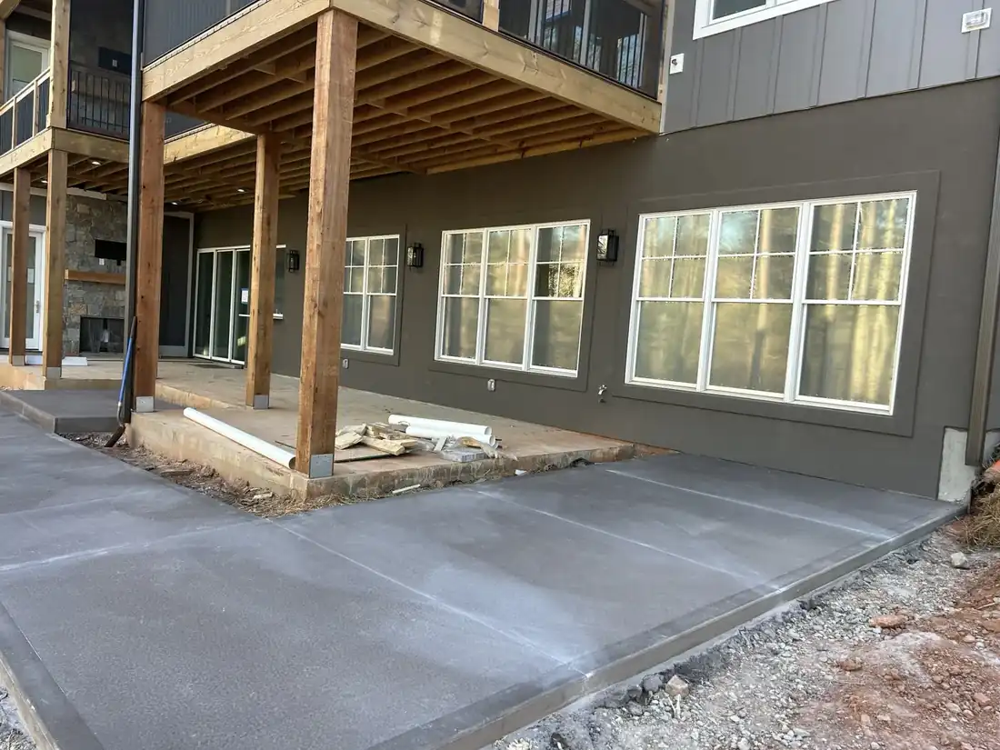
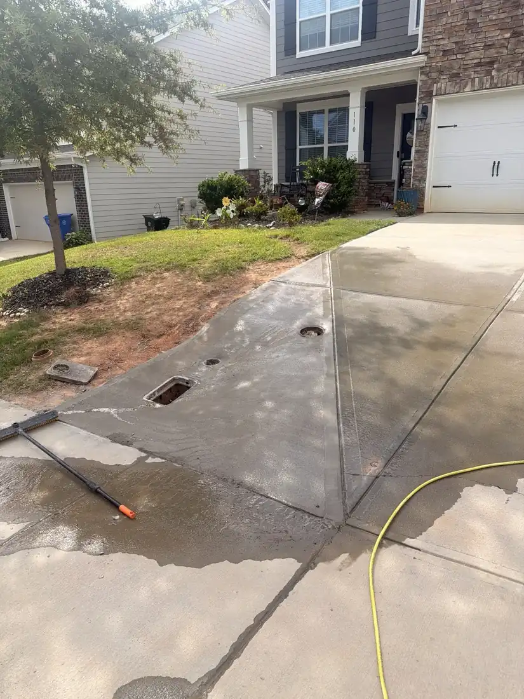
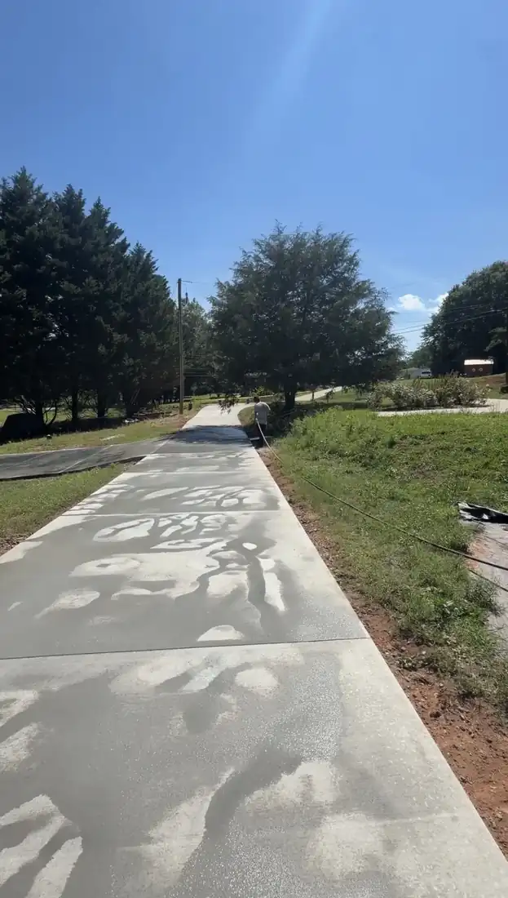

Selected work
Projects.
Real equipment, careful preparation and finished results across Upstate South Carolina and the surrounding region.






Built for your property
Your project could be next.
Send us a few details, photos or measurements. We will review the scope and schedule a free estimate.